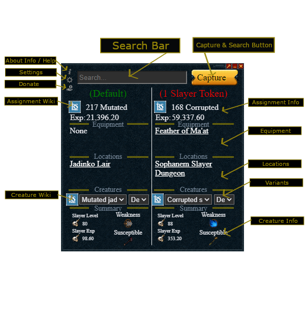
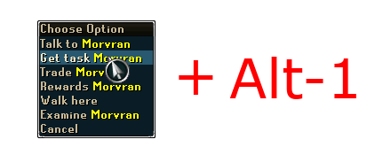

Example Slayer Ticket Assignment Interface
This Look N Feel has been designed by the community. It has slowly but surely updated to accomadate new information and features.
There are a few different instances that will cause the Slayer Assistant to update it's information. The first is if you go get a new task from a slayer master or death for reaper tasks. The next is while you are on a task, it will keep track of your kills vis the slayer/reaper counter GUI.
Once it reads an interface similar to the examples below it will save this assignment information and automatically do a lookup for you. You can also click on Capture to make it try and lookup a task on the screen at the very moment.
Example Slayer Assignment Interface
Example Slayer Ticket Assignment Interface
Example Slayer Counter Interface
This interface will cause it to lookup the exact assignment that is given (if expanded) and display relevant data; otherwise, it will just attempt to update the count of the current task it has loaded.
Example Reaper Assignment Interface
This interface will cause it to lookup the exact assignment that is given and display relevant data.
Example Reaper Counter Interface
This interface will cause it to lookup the exact assignment that is given (if expanded) and display relevant data; otherwise, it will just attempt to update the count of the current task it has loaded.
Example Select Your Own Assignment Interface
This interface will cause it to display a list of suggested tasks and why they are suggested for the Select Your Own Assignment.
There is now a search history you can use with the up and down arrow key? It resets everytime you close the app.
If you hover over the assignment wiki, creature wiki, and See More... on the app it shows more data. Give it a try
Opens up Slayer Assistant